Our own engine, and a design system for the web view
Two linked questions before the web view is built. Can we own the small reactive core behind Lit rather than depend on it? And what should a professional, keyboard-first, Omarchy-themed design system for DPlanner look like? A working prototype answers both.
Summary
Build both, and the prototype shows how. A 5.5 KB engine of our own performs with Lit on the same table workloads. One command registry over a context of URIs drives every surface. Three design variants come from one component set. Omarchy themes are followed live, and touch gets its own UI on the same commands.
About 1,000 lines with signals built in: 5.5 KB gzipped, against 4.1 KB for lit-html without signals and 11.5 KB with its signals add-on. It keeps pace on updates and trails Lit by 10–25% on bulk creation. Lit 3.3.3 currently ships a leak.
Ledger becomes the default. Atelier serves the report's readers, and Modeline suits people who live in a terminal. A separate touch frame shares everything but its layout.
JavaScript is 20–35% of every heavy operation. WASM cannot reach the rest without crossing back into JS. It can help with decoding and indexing big datasets later.
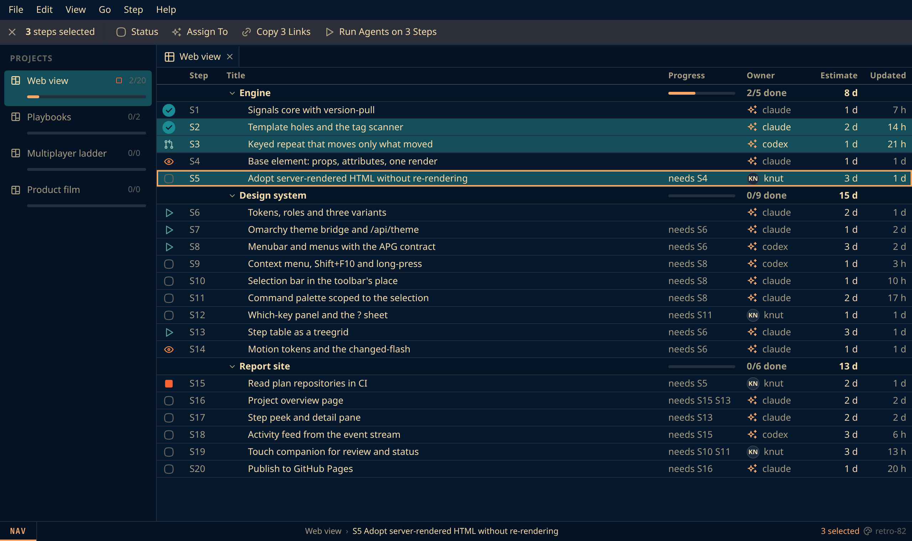
The engine: can we own it?
Lit's core idea fits in a few hundred lines, and our prototype implements it. Lit's size goes to dev diagnostics, SSR, polyfills and a public directive API, none of which we need. What remains hard is the lifetime of subscriptions and keyed moves. An independent review found six defects in our prototype, all now fixed and each under a test.
How Lit works, and what we kept
A tagged template's strings array is the same object every time a call site runs, so it is the cache key. The first render scans it once and writes HTML with a marker at every hole. The browser parses that into a <template>. Each later render clones it, or reuses the instance on screen, and hands each hole (a part) only its new value. Values never become markup. Lit's own lit-html.ts is 2,304 lines, about 630 of them code once dev mode is stripped; the essential mechanism is about 350.
| Bundle (esbuild --minify, gzip -9) | min | gzip |
|---|---|---|
lit-html 3.3.0 with repeat | 9.5 KB | 4.1 KB |
Our templates (html, render, repeat) | 11.3 KB | 4.3 KB |
| lit (LitElement, html, css, repeat) | 18.1 KB | 7.0 KB |
| lit + @lit-labs/signals | 32.3 KB | 11.5 KB |
| Our whole engine: signals, templates, base element | 14.6 KB | 5.5 KB |
| The whole desktop prototype: engine, design system, shell, features, 87 glyphs, 22 themes | 149 KB | 44.7 KB |
Where it differs from Lit, on purpose
- Signals are native. A component's render is one batched effect, re-run when anything it read changes. A signal placed straight in a hole updates that one text node or attribute with no render at all. That is the fine-grained path for hot spots: selecting a row costs 0.2 ms.
- No directive class system.
repeat, element refs and signals cover what we need. The rest is CSS or a signal. - Keyed moves keep only the longest run of rows that are already in order still, with head/tail skipping, so swapping two rows moves two rows. Moves use
moveBeforewhere the browser has it, so a moved row keeps focus.
Bugs found, here and upstream
- upstream Lit 3.3.1–3.3.3's
repeatleaks one comment per removed row (lit/lit#5298, still open). In our first benchmark, a replace-and-clear of 1,000 rows grew the DOM by 2,000 nodes each round. Rounds slowed from 340 ms to 1.4 s before we saw why. Pinned to 3.3.0 for a fair comparison. - fixed Six defects from an independent review of our prototype:
html()called as a plain function would parse data as markup; a hole in an SVG<title>was refused; computeds never unsubscribed; a detached element kept writing; a moved row lost focus; one failed commit broke every later render. - fixed Building the app found a seventh. A parent setting a child's reactive property read it back to compare, which subscribed the parent to its own child: an infinite loop that froze the page with no error. A new render-loop guard caught it on the first run, and both the fix and the guard are under test.
Performance, and the WASM question
Same league as Lit. We are faster or level on updates, selection and swaps, and 10–25% behind on creating many rows at once. Run order alone moved results by that much, so these are medians over three orders. In every heavy operation JavaScript is a quarter of the time; the browser's DOM, style and layout work is the rest.
Each row has its own scale; numbers are total milliseconds including a forced layout, Chromium 152, 12 rounds with the extremes trimmed, median of three run orders (evidence/). Hover a bar for the share spent in script.
Would a WASM core be faster?
Not for this. Signals and the template diff are microseconds of work. The milliseconds go to creating nodes and laying them out, which only the browser does. WASM cannot touch the DOM; every write would cross back into JavaScript, adding a boundary rather than removing one. Where WASM, or a plain Worker, would pay is bulk work off the main thread: decoding a large plan snapshot, building a search index, laying out a big graph. That belongs with the backend-for-frontend idea, where the store already loads in one bulk call and no component fetches its own data.
The design system
Professional, dense and learnable, with no explainer text. The system rests on five principles: teach by showing the key wherever a verb appears; code status by colour and shape; keep things in fixed places; stay dense and quiet; and make the surfaces unable to drift apart, because all of them read one registry.
The research behind it (notes/interaction-patterns.md) covers menubars, context menus, toolbars, the palette, modes, grids, touch, motion, icons, feedback and multitasking. It draws on the WAI-ARIA Authoring Practices, the Apple, Fluent and GNOME guidelines, and the tools that do this best: VS Code, JetBrains, Linear, Superhuman, Figma, Gmail and Helix. It ends in 51 numbered rules, and the prototype cites them. The glyphs are DPlanner's own: Tabler, under DPlanner's semantic keys, generated from src/dplanner/theme/glyphs, so a verb wears the same picture in the window and the browser.
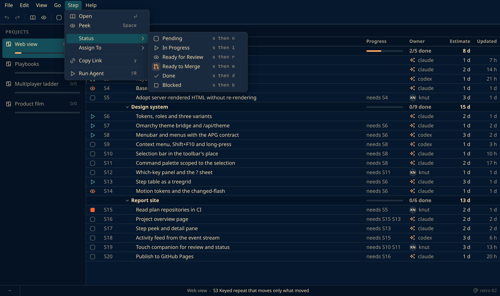
s then d). The checked status keeps its own glyph, lifted, so the tick that means "Done" is never mistaken for "checked".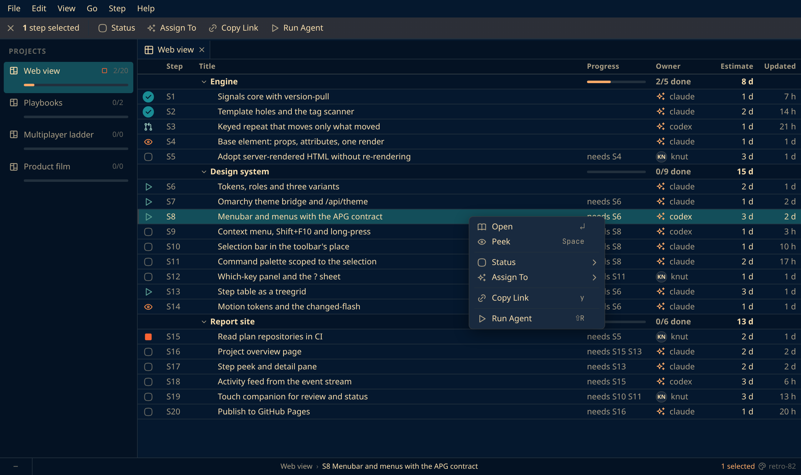
Three variants, one component set
A variant is about 30 lines of tokens, not a fork. Ledger is the classic workbench, Modeline is terminal-native and keyboard-first, and Atelier is calm and layered. The one structural difference, where the toolbar lives, is a single token the frame reads. Recommendation: Ledger as the default.
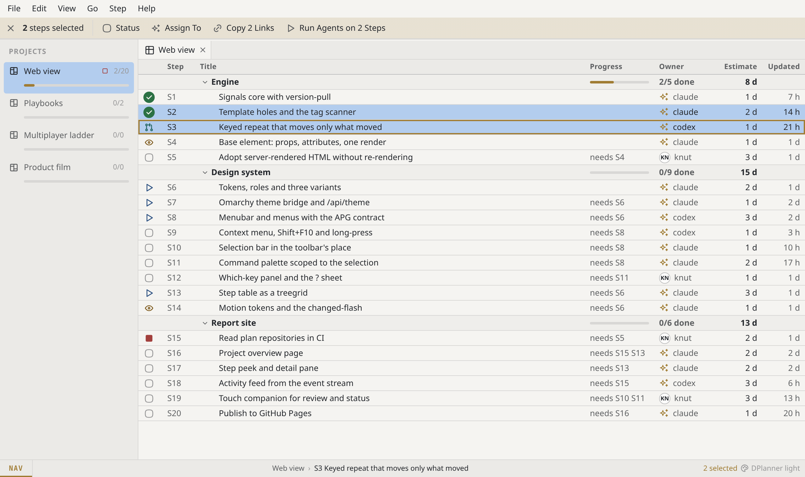
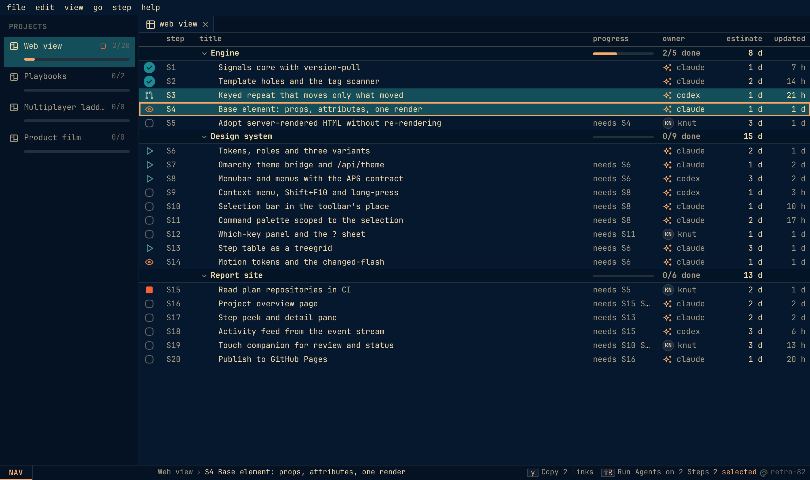
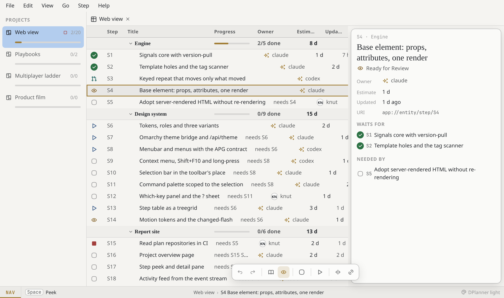
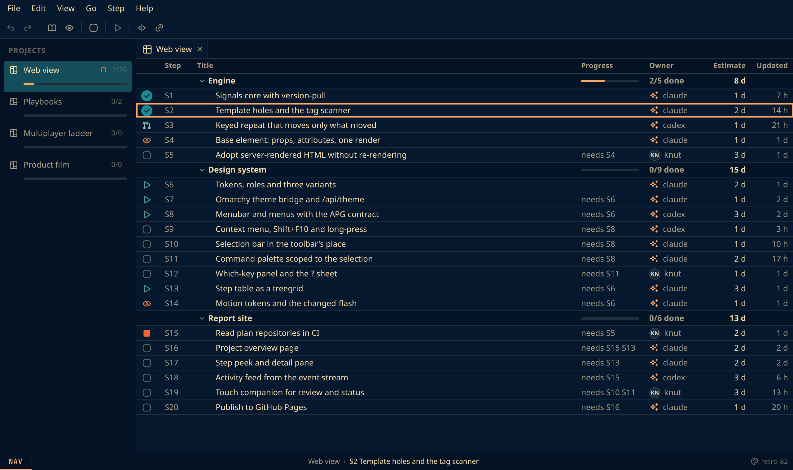
Omarchy themes, followed live
Omarchy's colors.toml is the theme format. A theme sets ten raw colours, and CSS color-mix() derives every role from them, using the same ramps as the Qt app's theme/omarchy.py. "Automatic" follows a local server's /api/theme, polled with an ETag so an unchanged theme costs a 304. Without one, as on CI, it follows the browser's light/dark preference.
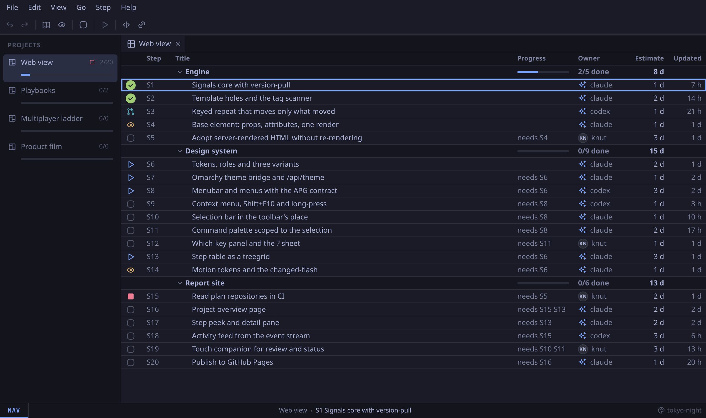
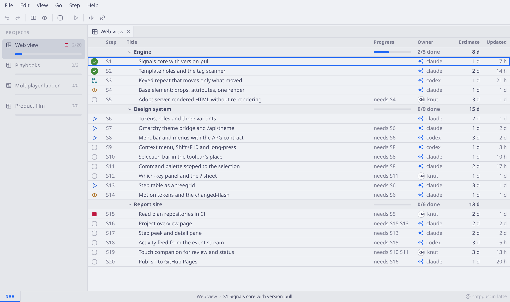
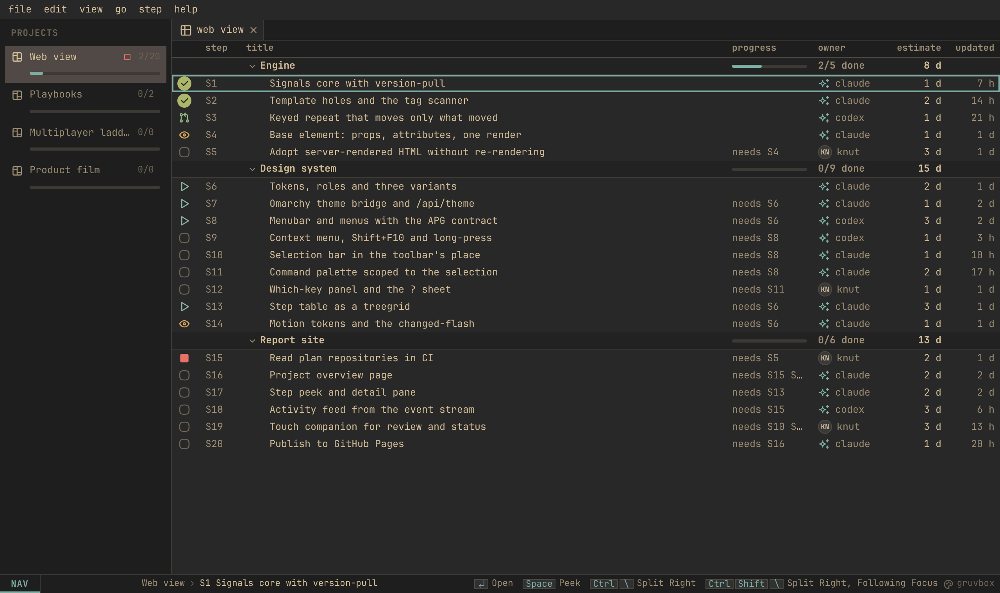
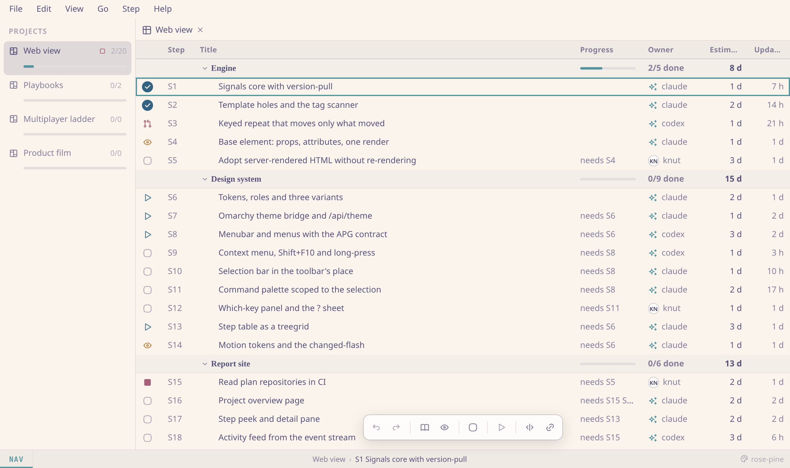
One deliberate difference from the Qt app: status colours come from the theme's own ANSI hues, mixed 10–30% toward its text colour so a dim blue still reads. The Qt app uses fixed tints, which clash with most Omarchy palettes. Shape carries status too, so a hue that reads poorly does not lose information. All 22 stock themes and DPlanner's own Dark and Light are in the picker; a theme change is the one screen-wide crossfade.
Context, commands, and the selection bar
Every verb is registered once and shown everywhere it applies: menubar, context menu, toolbar, selection bar, palette, which-key panel, ? sheet and touch bar. Its state is computed from a context of URIs (app://entity/step/S12), as framework/context.py does. Keeping focus and selection apart is what makes the toolbar behave.
- Focus is not selection. Arrows and j/k move focus and never reshape the chrome. x, Ctrl-click and Shift-click build the selection, which turns the toolbar into the selection bar.
- One target rule. A verb acts on the selection if there is one, else on the focused step, and its label says which: "Copy 3 Links", "Run Agents on 2 Steps".
- A refusal carries its reason. "Select or focus a step first" appears in the tooltip, the palette row, the menu item's description and, when a key is pressed, the modeline.
- The palette opens scoped to the selection, shown as a chip. Backspace on an empty query widens it to everything, and recents come first.
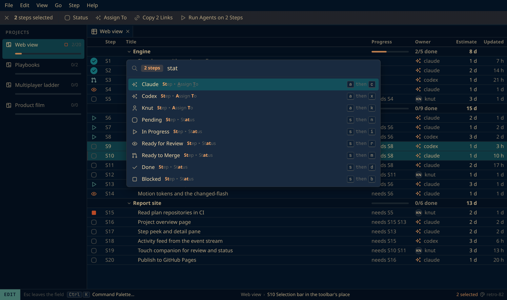
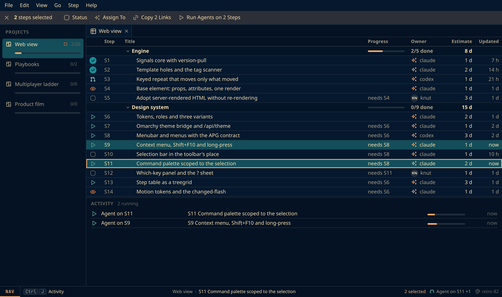
Keyboard-driven, without the Vim trap
"Normal mode" is never entered; it is simply where you are whenever focus is on a navigable surface and not in a text field. Bare keys act there and nowhere else, which is both Vim's speed and WCAG 2.1.4's "active only on focus". The modeline always names the mode and its way out, and Escape steps exactly one level outward.
| Mode | When | The way out, as shown |
|---|---|---|
NAV | focus on the table or a list | — (home) |
EDIT | focus in any text field; the keys are letters again | "Esc leaves the field" |
s… | a prefix typed; which-key appears after 400 ms | "Esc cancels" — never a silent timeout |
| a verb's own mode | a verb that needs more input | named by the verb |
The system teaches itself. Keys are printed on every menu row, tooltip and palette row. The modeline echoes every command with its key, however it ran, so a mouse user who clicks Peek sees "Peek · Space". Holding Ctrl for 600 ms puts chord badges on the toolbar. ? opens the sheet with the focused thing's own verbs first. View ▸ Single-Key Shortcuts turns bare keys off.
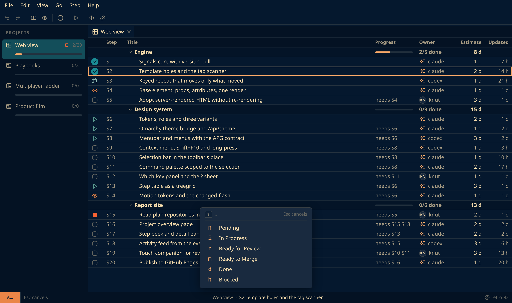
s… at once; 400 ms later the panel lists what each next key does.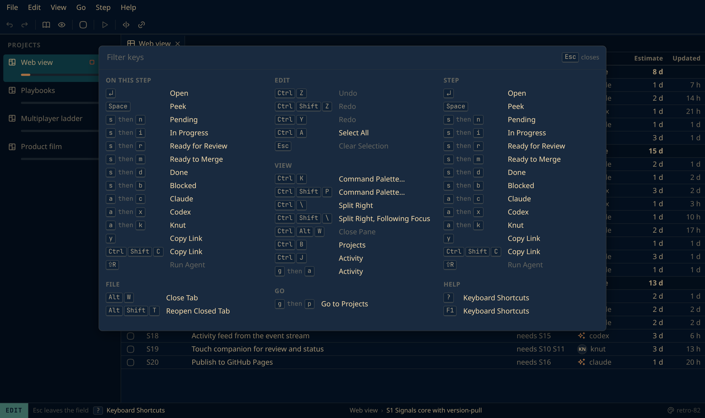
Doing more than one thing at once
Panes are live views of one store, never copies, so two panes can never disagree. A pane can follow another's focus. Space peeks beside the table. Background work reports on the thing it changes and in an Activity panel.
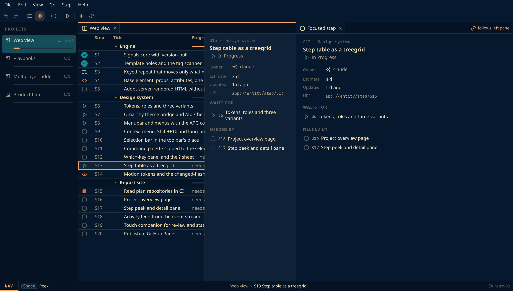
- Preview tabs. A single click opens a tab that the next single click replaces; a double click pins it, so browsing leaves no trail.
- Waiting for a task. Run Agent turns the step In Progress at once. When the agent writes Ready for Review, the row washes once in every pane that shows it, because a change by another writer is the one thing that should catch the eye. A toast appears only if you started the run and it took long enough for you to have moved on.
- Keys inside a browser. The browser owns CtrlW/T/Tab, so in-app tabs use AltW and Alt⇧T. Every view should get a URL so Ctrl-click opens it in a new browser tab.
Motion that informs, never adorns
Motion answers one of three questions: where did it go, what changed under me, and where did this come from? Anything done hundreds of times a day does not animate. State commits first and every animation is interruptible, so the person never waits for one.
| Motion | Says | Duration |
|---|---|---|
| A menu scaling out of its trigger (pointer only) | where it came from | 150 ms |
| Rows travelling to their new places on sort | where they went | 220 ms |
| A one-shot wash on rows another writer changed | what changed under you | 1.2 s |
| Toolbar ↔ selection bar crossfade (pointer only) | the same slot changed role | 100 ms |
| A touch screen arriving from the right, leaving to the left | where you went | 220 ms |
| A theme change crossfading the window | everything changed at once | ≈250 ms |
| Keyboard-opened menus, the palette, selection, focus, key repeat | — instant, always | 0 |
Durations and easings are tokens. prefers-reduced-motion and View ▸ Reduce Motion zero them, and the motion helpers check too. This is a deliberate step past the Qt app's DESIGN.md, which allows almost no motion. In a browser, where tables re-sort and agents write under you, these few motions carry real information.
Touch: a separate UI on the same commands
Two UIs, as you said you would prefer if one compromised the other. The touch frame is a stack of screens with bottom tabs. Rows are 56 px, a long press starts selecting, the selection bar takes the app bar's place, the bulk verbs fill a bottom action bar, and a submenu becomes a sheet. It runs the same commands, context, store and workspace, so it can never grow a verb the desktop lacks.
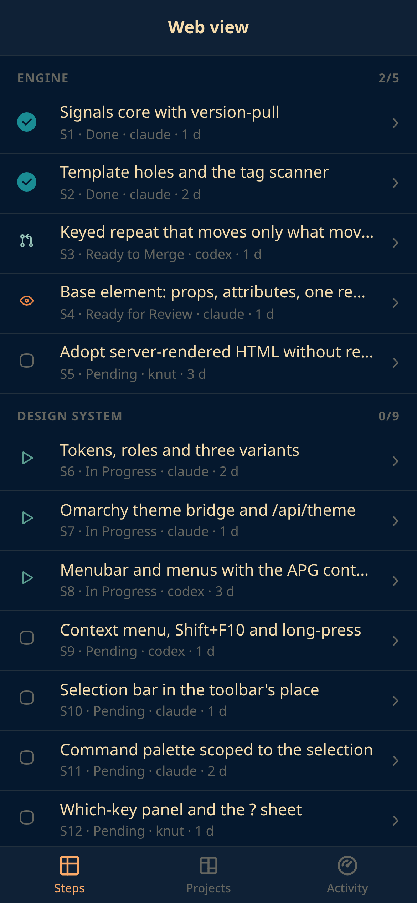
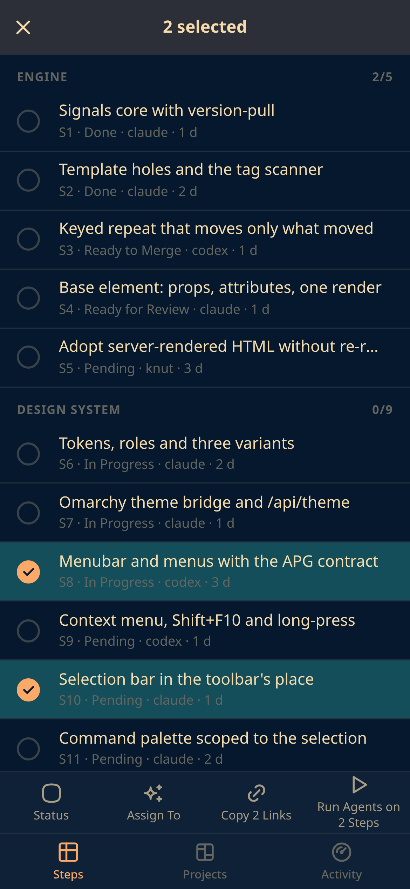
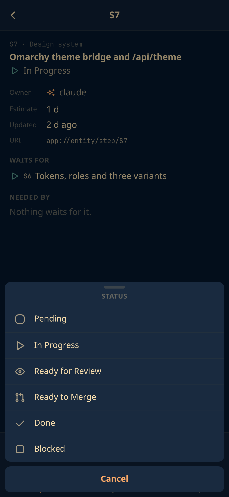
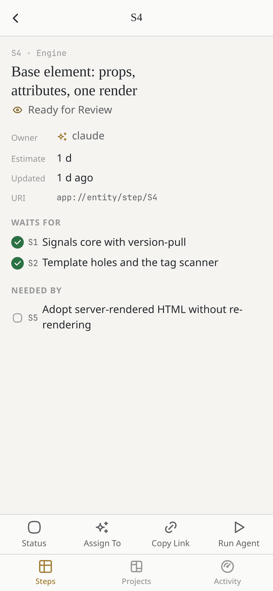
Verbs that mean nothing on touch, such as Peek and Open, say so (touch: false) and the touch surfaces drop them. Proposed detection is a coarse pointer with no hover on a narrow screen, with a switch in each frame remembered per device. A touch laptop or an iPad with a keyboard gets the desktop.
Keeping entropy down
The structure is DPlanner's own, enforced by a test. Engine, design system, shell, data and features form layers that only import downward. Features never import each other; one composition root wires them. Components take plain data and emit events, through one shared item shape documented in ui/README.md.
framework/8 files · 1,170modules/; never import each other7 files · 1,090tests/layers.test.mjschecks 171 imports: every one goes downward, nothing imports a package, and no feature reaches into another.- A feature registers verbs and views; it never builds a button that runs code. Adding a verb is one
commands.register(), and it appears in the menu, palette, keys, toolbar and touch bar. - Each component is one file, with its CSS beside its code and every class scoped under its element. A shared
.barclass once clipped the menubar to 96 px; that bug is why the rule exists. - There is no build step. The prototype runs from source; esbuild exists only in
tools/to measure and to pack this report's demo.
Edge cases and failure modes
Worked through, not hoped about. Several of these were found by running the prototype, not by thinking about it, and each is now fixed or listed as a gap.
| Case | What happens |
|---|---|
| A render writes a signal it reads | The base element throws, naming the element, after 200 renders without yielding. A frozen page becomes an error message. |
| A focused row moves (sort, another writer) | moveBefore keeps focus where supported; elsewhere focus is restored after the move. |
| Rows removed while their computeds still watch the selection | Computeds with no readers let go of their sources, and elements tear down on disconnect. |
| Markup in plan data | Values are never parsed as markup. A strings array that is not a real template literal is refused. |
No /api/theme (CI, another OS), or Omarchy swapping its theme directory mid-read | Without the endpoint, the browser's preference is used. A failed read keeps the current theme until the next poll. |
| IME composition, AltGr layouts, browser-reserved chords | Composition is ignored, there are no Ctrl+Alt+letter bindings, and tabs use Alt-based keys. |
Focus on <body> | Bare keys are off (the mode shows "—"). Arriving on the table focuses its first row. |
| Clicking an already-focused grid in the other pane | Panes also activate on pointer-down, a bug the split scene found. |
| Undo clicked in a toast that then disappears | The stack releases its focus pause after each render. Without that, every later toast froze, a bug the overlay tests found. |
| Long press versus scrolling on touch | Moving more than 8 px cancels the long press, and scrolling stays native. |
| 10,000 rows | About 250 ms to build, ours or Lit's. Virtualise past about 500 rows, keeping the focused row mounted. |
| A dependency regresses (Lit 3.3.1) | With our own engine, a fix is ours to make the same day, under our own tests. |
Try it
The prototype, live. The desktop frame is on the left and the touch frame on the right, both built from the same sources. There is no /api/theme here, so "Automatic" follows your browser's light or dark setting; choose an Omarchy theme from View ▸ Theme ▸ More Themes…
In the repository, the frames need node tools/build-demo.mjs first. To run it with your desktop's live theme, use node tools/serve.mjs.
Gaps and next steps
Settle the scope, port the engine, then wire real data. The timeline note says the web view is read-only. The design system supports verbs, but the first version should register only reading ones.
Known gaps in the prototype
- The touch sheet does not mark the current status as checked.
- The selection is not pruned when another writer deletes a selected step.
- There is no virtualisation, no column chooser, and column widths are not remembered.
- There has been no screen-reader pass. Roles and labels are in place, but nobody has listened to them.
- Safari and Firefox are untested. The touch frame is chosen by page, not yet by detection.
If this goes ahead
- Decide what the first version may do: read-only verbs (open, peek, copy link, filter), or more.
- Port the engine out of the prototype at the line budget in
notes/lit-engine.md, adding aselector()helper for per-row selection. - Have
dplanner reportemit the store's snapshot shape. Later, a localdplanner servecan provide it and/api/theme. - Work out how to adopt server-rendered HTML, which is the backend-for-frontend's hydration question.
- Add virtualisation, an accessibility pass, and other browsers.